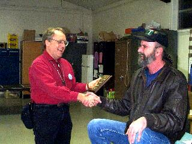

SJAA
Ephemeris
|
SJAA Ephemeris |
"Aperture Wins," But So Does Jay FreemanJane Houston |
|  |
A great crowd attended the first 1999 general meeting of the SJAA on January 30th where President Ed Erbeck presented the A. B. Gregory Award to Jay Freeman. The award is a plaque including the text "In recognition of Outstanding Contributions of Time and Effort to Others in Amateur Astronomy."
The award is named after Dr. A. Boris Gregory, professor of French Literature, lifetime amateur astronomer, and president of SJAA in 1973-74. Congratulations Jay on a well deserved honor! The club thanks Jay for the many ways he helps the rest of us, through his vivid observing reports, equipment and eyepiece comparisons, and observing tips and guidelines.
Without missing a beat, Ed then introduced the speaker for the evening - Jay Freeman! Jay brought two companions to assist in his presentation on deep sky observing - Refractor Red, his 55 mm dayglow tubed Vixen fluorite, and making her grand debut, Juliette, the 98 mm f/6.7 Brandon refractor. Juliette started out as a 94 mm f/7, doubtlessly in a more conservative color scheme. Juliette was resplendant in Pearlescent Pink girdled in gold - Rustoleum Gold, that is! A black lace handkerchief, snugly held in place by a red and black garter served as a dust cover.
Jay's talk, Cosmic Birdwatching, centered on three themes. Rule one: Aperture wins. Rule two: You don't need large aperture to do deep-sky observing. And rule three: You can develop observing skills just as well with a small telescope as with a large one. Jay's good advice given during this talk can be found (along with many other helpful guides) at http://www.seds.org/TAC/beginner/deep.sky.html.
Refractor Red and Juliette were frequently called into service to assist in answering the many questions from the appreciative audience.
| Jane Houston; last updated: February 05, 2002 | Prev Next |